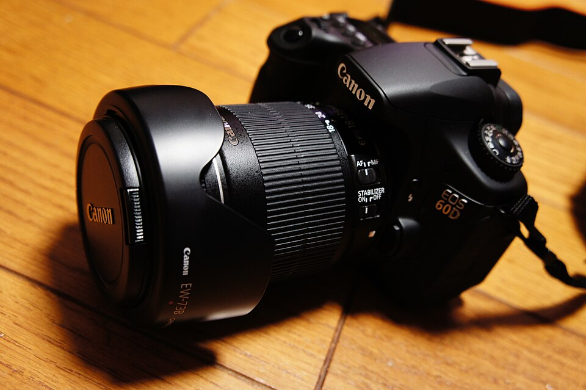

日本Canon公司于2002年2月23日宣布推出新一代6.3M像素的数码SLR――EOS D60。采用新开发的6.52M(总数)6.3M(有效)像素的单片CMOS传感器，含有3072 x 2048个方形像素、12位模数转换器，同时集成了一个RGB三原色滤镜阵列，保证了EOS D60具有高解像力和卓越的色彩还原。该传感器的面积同EOS D30，为15.1 x 22.7mm，使用35mm画幅的焦距转换系数是1.6x